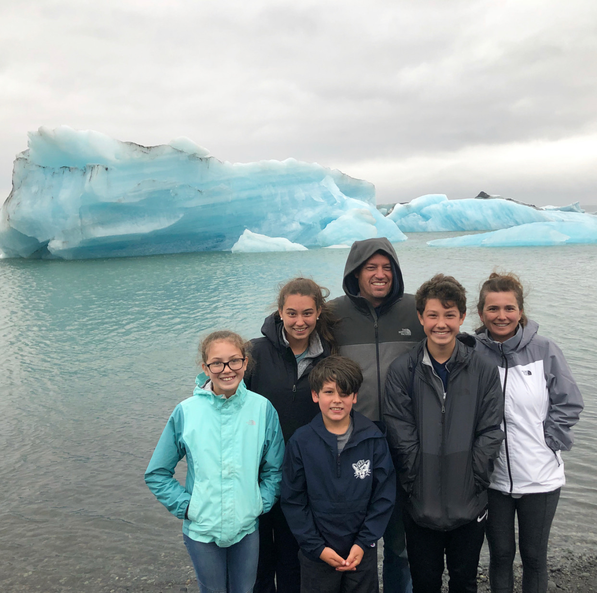

All about me
My name is Luke Haslam, and I am the second child of my six person family. Ever since I was young I have loved playing sports. Especially soccer. In the past I have done basketball, baseball, football, hockey, and lacrosse. However, soccer is the sport that stuck with me. I also play piano even though it is my least favorite thing to do, on this planet.
Another important thing in my life is travelling, which is another reason why I love the summer time so much. I've been to almost every single state in the United States, and I've also been to over 12 countries including Japan, China, Bangladesh, France, and Iceland. (Thats where the picture is taken above.)Every summer we go on a road trip with my mom's side of the family, California to visit my dad's side of the family, and a country outside of the US with my imediate family.